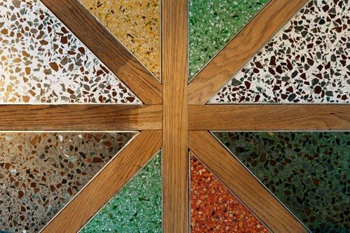

Göteborg · sedan 1970
Terrazzo med exceptionell slitstyrka och unik design
Vi gjuter, slipar och renoverar terrazzogolv, trappor och ytor – och följer er från idé till färdigt, unikt golv.
- Sedan 1970Grundat av Stig Hofling
- 87 egna kulörerPlatsgjuten kollektion
- Platsgjutet och prefab40 plattkulörer
- Stora som små projektFrån idé till färdigt golv

Göteborgs Mosaikbeläggningar AB
En tradition som funnits i tusentals år
Göteborgs mosaikbeläggningar AB erbjuder stora möjligheter att skapa miljövänliga terrazzogolv med exceptionell slitstyrka och unik design. Vi arbetar främst med platsgjutna golv där vi har tagit fram en egen kollektion med stor variation av färger under åren.
Inga projekt är för stora eller för små. Vi följer er från idé till färdigt unikt golv. Vi vänder oss främst till arkitekter, byggherrar, konstnärer och designers men tar även emot beställningar från privatpersoner.
Det här gör vi
Terrazzo för golv, trappor, väggar och kök
Platsgjuten terrazzo
Fogfria, slitstarka golv och trappor som gjuts på plats – i en egen kollektion med 87 kulörer.
Läs mer
Golv-, vägg- och fasadplattor
Prefabricerade terrazzoplattor för golv, väggar, fasader och trappbeklädnad.
Läs mer
Bänkskivor och fönsterbänkar
Kök, badrum och fönsterbänkar i terrazzo, med en egen färggrupp för skivor.
Läs mer
Loggor och konst
Er logga, ett mönster eller ett konstverk – ingjutet i terrazzo.
Läs mer
Renovering
Slipning, lagning och grovrengöring av terrazzo och natursten.
Läs mer
Torkzoner
Kåbe skrapgaller och torkmattor som skyddar golvet i entrén.
Läs mer
Egen kollektion
87 kulörer – eller den du inte visste att du önskade
Följande kollektion är skapad av Andreas Hofling och Erik ”Professorn” Tobiasson. Vi kan även hjälpa er att ta fram just den kulör ni kanske inte ens visste att ni önskade.


Så läggs ett platsgjutet golv
Tre moment, oftast tre dagar
- 1
Läggning
Terrazzon gjuts på plats med foglister i det mönster ni valt.
- 2
Grovslipning och spackling
Ytan slipas fram och porer spacklas.
- 3
Finslipning
Slipningen görs med vatten till önskad finish.
Renovering
Terrazzo går att slipa och laga – i stället för att bytas ut
För att öka naturstenens och terrazzogolvets livslängd kan man slipa om golvets ytskikt, spackla sprickor och laga skador med samma material. Resultatet blir ett golv som inte bara varar längre, utan som är finare att se på och lättare att hålla rent.
- Slipning Terrazzo och natursten
- Lagning Terrazzo och naturstensytor
- Grovrengöring Terrazzo, natursten, klinker och betong
Familjeföretag
Över femtio år av terrazzo i Göteborg
Vi besitter en bred kompetens gällande terrazzo då vi har en lång erfarenhet som sträcker sig till 1970 då företaget grundades av Stig Hofling. År 2011 fick företaget ny regi i form av Andreas Hofling som tog över rodret. Andreas har varit verksam i branschen sedan 1999.
- 1970Stig Hofling grundar Göteborgs Mosaikbeläggningar.
- 1999Andreas Hofling börjar i branschen.
- 2011Andreas Hofling tar över rodret.
- I dagPlatsgjutet, prefabricerat och renovering – med en egen färgkollektion.

Dokumentation
Installation, renovering och skötsel
Installation
Renovering
Skötselanvisningar
Byggvarudeklaration
Vanliga frågor
Bra att veta om terrazzo
Vilka arbetar ni med?
Vi vänder oss främst till arkitekter, byggherrar, konstnärer och designers men tar även emot beställningar från privatpersoner. Inga projekt är för stora eller för små.
Vad är terrazzo?
Ett slipbart naturmaterial som i grunden består av cement och krossad marmor. Cementen kan pigmenteras i vilken färg som helst och man kan blanda in glaskross och lägga in detaljer i marmor, mässing eller aluminium.
Hur tjockt blir ett platsgjutet golv?
Terrazzon läggs 15 mm tjock med kornstorlekar upp till 12 mm. Betong och terrazzo ska tillsammans vara 75 mm.
Hur lång tid tar det?
Arbetet delas grovt in i tre moment – läggning, grovslipning med spackling och finslipning – som i de flesta fall görs under tre olika dagar.
Går det att renovera ett gammalt terrazzogolv?
Ja. Terrazzo går att slipa om och laga med samma material, och ni väljer själva finish: matt, halvblankt eller blankt. Läs mer under Renovering.
Kan jag få prover?
Ja, beställ prover så skickar vi dem till dig. Skriv gärna vilka kulörer du är intresserad av.
Hur sköter jag golvet?
Vid daglig städning används Steinfix 60, en pH-neutral natursåpa som skyddar impregneringen. Se skötselanvisningarna.
Har du ett projekt på gång?
Berätta om golvet, trappan eller ytan – så hjälper vi dig från idé till färdigt resultat. Vill du se materialet först skickar vi gärna prover.